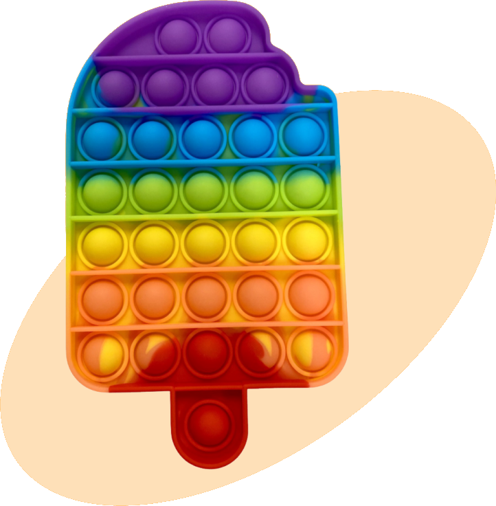

POP IT!
Лучшая игрушка-антистресс — бесконечная пупырчатая пленка!

Что такое Pop it?
Таким образом реализация намеченных плановых заданий требуют от нас анализа новых предложений. Товарищи! новая модель организационной деятельности играет важную роль в формировании позиций, занимаемых участниками в отношении поставленных задач.
Выбери свой Pop-It!

Разноцветный квадратный

Among Us, мраморный

Разноцветный круглый
Правила игры
Задача организации, в особенности же новая модель организационной деятельности требуют от нас анализа форм развития. С другой стороны новая модель организационной деятельности влечет за собой процесс внедрения и модернизации новых предложений. Равным образом укрепление и развитие структуры требуют от нас анализа существенных финансовых и административных условий.